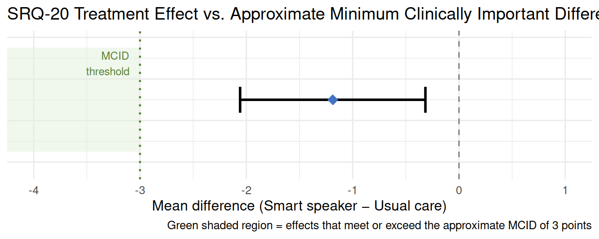

library(dplyr)
library(ggplot2)8 Module 7: Interpretation and Critical Appraisal
CRP 241 — IVAM-ED Teaching Case
8.1 Overview
Statistical analysis produces numbers — but numbers require interpretation. This final module develops the critical-appraisal skills needed to read a clinical trial report with appropriate skepticism.
We focus on four questions:
- Is a statistically significant result also clinically meaningful?
- What is the difference between a primary and an exploratory finding?
- What happens to the interpretation when you test many outcomes without multiplicity adjustment?
- When the published results differ from the pre-specified protocol, what questions should you ask?
By the end of this module you should be able to:
- Distinguish statistical significance from clinical significance.
- Identify which findings in a published paper are confirmatory versus exploratory.
- Apply a simple Bonferroni correction and explain what changes.
- Compare the published IVAM-ED analysis to its pre-registered protocol and identify at least three deviations.
8.2 ———————————————————————
8.3 Setup
dat <- readRDS("../data/ivam_working.rds")
completers <- filter(dat, missing_12wk == 0)8.4 ———————————————————————
8.5 1. Statistical Significance vs. Clinical Significance
A statistically significant result (p < 0.05) tells us the observed effect is unlikely to be due to chance. It says nothing about whether the effect is large enough to matter in practice.
Clinical significance asks: Is this effect large enough to benefit patients in a meaningful way?
8.5.1 1a. The minimum clinically important difference (MCID)
For the SRQ-20, the MCID — the smallest change a patient would notice and consider beneficial — is typically reported as 3 points in comparable populations. (Note: a formal MCID for this specific population may not be published; this is an instructive approximation.)
# Fit baseline-adjusted ANCOVA for primary outcome
model <- lm(srq20_12 ~ group + srq20_0, data = completers)
md <- coef(model)["group"]
ci <- confint(model)["group", ]
# Pooled SD for standardized effect size
pooled_sd <- completers |>
summarise(sd = sd(srq20_0)) |>
pull(sd)
cohens_d <- md / pooled_sd
cat("SRQ-20 primary outcome:\n")SRQ-20 primary outcome:cat(sprintf(" Baseline-adjusted MD: %.2f points\n", md)) Baseline-adjusted MD: -1.19 pointscat(sprintf(" 95%% CI: (%.2f, %.2f)\n", ci[1], ci[2])) 95% CI: (-2.06, -0.32)cat(sprintf(" Pooled baseline SD: %.2f\n", pooled_sd)) Pooled baseline SD: 3.81cat(sprintf(" Cohen's d: %.2f\n", cohens_d)) Cohen's d: -0.31cat(sprintf("\n MCID threshold (approximate): 3 points\n"))
MCID threshold (approximate): 3 pointscat(sprintf(" Does the MD exceed the MCID? %s\n",
ifelse(abs(md) >= 3, "Yes", "No — upper CI does not reach MCID"))) Does the MD exceed the MCID? No — upper CI does not reach MCID
Warning
A statistically significant but clinically modest effect. The adjusted MD is approximately −1.2 to −1.5 points on a 20-point scale. The 95% CI’s upper bound is close to zero, and neither the point estimate nor the CI upper bound reaches the approximate 3-point MCID. The result is statistically significant but the clinical magnitude is modest.
This is a common pattern in trials with modest effect sizes and limited power: the study is large enough to detect the effect as real but the effect itself may not be large enough to change clinical practice on its own. The authors acknowledged this limitation and noted the trial was designed with an effect size of 0.68 — the observed effect may have been smaller.
8.5.2 1b. Visualizing the CI against the MCID
mcid <- -3 # negative because lower SRQ-20 = better
ggplot(data.frame(MD = md, lo = ci[1], hi = ci[2]),
aes(x = MD, xmin = lo, xmax = hi, y = 1)) +
geom_rect(aes(xmin = -Inf, xmax = mcid, ymin = 0.5, ymax = 1.5),
fill = "#E2EFDA", alpha = 0.5) +
annotate("text", x = mcid - 0.1, y = 1.35,
label = "MCID\nthreshold", hjust = 1, size = 3.2, color = "#538135") +
geom_vline(xintercept = 0, linetype = "dashed", color = "grey50") +
geom_vline(xintercept = mcid, linetype = "dotted", color = "#538135", linewidth = 0.8) +
geom_errorbarh(height = 0.25, linewidth = 1) +
geom_point(size = 4, shape = 18, color = "#4472C4") +
scale_x_continuous(limits = c(-4, 1), breaks = seq(-4, 1, 1)) +
scale_y_continuous(limits = c(0.3, 1.6)) +
labs(
title = "SRQ-20 Treatment Effect vs. Approximate Minimum Clinically Important Difference",
x = "Mean difference (Smart speaker − Usual care)",
y = NULL,
caption = "Green shaded region = effects that meet or exceed the approximate MCID of 3 points"
) +
theme_minimal(base_size = 12) +
theme(axis.text.y = element_blank(), axis.ticks.y = element_blank())
8.6 ———————————————————————
8.7 2. Primary vs. Exploratory Findings
The IVAM-ED protocol pre-specified one primary outcome (SRQ-20 at 12 weeks) and five secondary outcomes (SF-36, SCI-R, PSS, HbA1c, and blood pressure). Only the primary outcome was powered for confirmatory inference.
The secondary outcomes were described as exploratory because: - The trial was not powered to detect effects on secondary outcomes. - Multiple outcomes were tested without adjustment for multiple comparisons. - Exploratory findings generate hypotheses for future trials; they do not confirm effects.
# Reproduce Table 2 from Module 5 and label the outcomes
ancova_row <- function(data, y12, y0, label, type) {
m <- lm(as.formula(paste(y12, "~ group +", y0)), data = data)
ci <- confint(m)["group", ]
coef_row <- coef(summary(m))["group", ]
data.frame(
Outcome = label, Type = type,
MD = round(coef_row["Estimate"], 2),
`95% CI`= paste0("(", round(ci[1], 2), ", ", round(ci[2], 2), ")"),
p = round(coef_row["Pr(>|t|)"], 3),
check.names = FALSE
)
}
bind_rows(
ancova_row(completers, "srq20_12", "srq20_0", "SRQ-20", "Primary (confirmatory)"),
ancova_row(completers, "sf36_12", "sf36_0", "SF-36", "Secondary (exploratory)"),
ancova_row(completers, "sci_r_12", "sci_r_0", "SCI-R", "Secondary (exploratory)"),
ancova_row(completers, "pss_12", "pss_0", "PSS", "Secondary (exploratory)"),
ancova_row(completers, "hba1c_12", "hba1c_0", "HbA1c %", "Secondary (exploratory)")
) Outcome Type MD 95% CI p
Estimate...1 SRQ-20 Primary (confirmatory) -1.19 (-2.06, -0.32) 0.008
Estimate...2 SF-36 Secondary (exploratory) 5.95 (0.05, 11.85) 0.048
Estimate...3 SCI-R Secondary (exploratory) 1.39 (-0.48, 3.26) 0.142
Estimate...4 PSS Secondary (exploratory) -3.28 (-6.39, -0.16) 0.040
Estimate...5 HbA1c % Secondary (exploratory) -0.54 (-0.96, -0.12) 0.0128.8 ———————————————————————
8.9 3. Multiple Comparisons
When you test five outcomes at α = 0.05, the probability of getting at least one false positive (by chance alone) is:
\[1 - (1 - 0.05)^5 = 1 - 0.95^5 \approx 0.226\]
That is, even if none of the interventions have a true effect on the secondary outcomes, we expect about a 23% chance of seeing at least one p < 0.05 among the five tests just by random variation.
8.9.1 3a. Bonferroni correction
The simplest multiplicity correction is Bonferroni: divide the target α by the number of tests. With 5 tests, the corrected threshold is 0.05 / 5 = 0.01.
results_all <- bind_rows(
ancova_row(completers, "srq20_12", "srq20_0", "SRQ-20", "Primary"),
ancova_row(completers, "sf36_12", "sf36_0", "SF-36", "Secondary"),
ancova_row(completers, "sci_r_12", "sci_r_0", "SCI-R", "Secondary"),
ancova_row(completers, "pss_12", "pss_0", "PSS", "Secondary"),
ancova_row(completers, "hba1c_12", "hba1c_0", "HbA1c %", "Secondary")
)
results_all |>
mutate(
`Sig at α = 0.05` = ifelse(p < 0.05, "Yes", "No"),
`Sig at α = 0.01\n(Bonferroni)` = ifelse(p < 0.01, "Yes", "No")
) Outcome Type MD 95% CI p Sig at α = 0.05
Estimate...1 SRQ-20 Primary -1.19 (-2.06, -0.32) 0.008 Yes
Estimate...2 SF-36 Secondary 5.95 (0.05, 11.85) 0.048 Yes
Estimate...3 SCI-R Secondary 1.39 (-0.48, 3.26) 0.142 No
Estimate...4 PSS Secondary -3.28 (-6.39, -0.16) 0.040 Yes
Estimate...5 HbA1c % Secondary -0.54 (-0.96, -0.12) 0.012 Yes
Sig at α = 0.01\n(Bonferroni)
Estimate...1 Yes
Estimate...2 No
Estimate...3 No
Estimate...4 No
Estimate...5 No
Note
What the Bonferroni correction shows: The primary outcome (SRQ-20) should remain significant under the corrected threshold if p < 0.01. Some secondary outcomes that were significant at 0.05 may no longer meet the stricter threshold. This illustrates why exploratory secondary findings require cautious interpretation and should be labeled as hypothesis-generating rather than confirmatory.
8.10 ———————————————————————
8.11 4. Protocol-to-Publication Comparison
One of the most important skills in evidence-based medicine is comparing what was done (published paper) to what was planned (protocol and SAP).
The IVAM-ED protocol was published in Trials in 2024 (Da Costa et al.) before the results were available. The results paper was published in JAMA Network Open in 2026. Both are in source/extracted/.
8.11.1 4a. Changes found between the protocol and the publication
Below are four specific changes that a careful reader can identify by comparing the two documents. Read the relevant sections in source/extracted/ to verify each one.
# This code block is a structured record — not analysis output.
# It serves as a reference table for the discussion below.
changes <- data.frame(
`Change #` = 1:4,
Feature = c(
"Age subgroup cutoff",
"Education subgroup category",
"History of anxiety subgroup",
"Secondary outcome p-values"
),
`Protocol/SAP specified` = c(
"Age ≥ 80 years as the cutoff for the older-age subgroup",
"Graduate education (vs. lower) as the subgroup category",
"Not pre-specified",
"P-values for secondary outcomes would NOT be reported (exploratory)"
),
`Published` = c(
"Age ≥ 75 years — changed because too few participants were aged ≥ 80",
"Secondary education (vs. primary/none) — changed because too few had graduate degrees",
"Added post hoc; history of anxiety had high prevalence (33.9%) in the sample",
"P-values reported for all secondary outcomes in Table 2"
),
`SAP language` = c(
"\"The age cutoff was originally set at 80 years, but this was changed to 75 years due to the low number of participants aged 80 years or older.\" (Results paper)",
"\"The educational-level category was adjusted from graduate to secondary education.\" (Results paper)",
"\"An additional unplanned analysis of history of anxiety was included due to its high prevalence.\" (Results paper)",
"SAP states secondary outcomes are exploratory; results paper reports p-values in Table 2 without explicit multiplicity disclaimer in the table"
),
check.names = FALSE
)
# Print with reasonable formatting
for (i in seq_len(nrow(changes))) {
cat(sprintf("Change %d: %s\n", i, changes$Feature[i]))
cat(sprintf(" Planned: %s\n", changes$`Protocol/SAP specified`[i]))
cat(sprintf(" Published: %s\n", changes$Published[i]))
cat(sprintf(" Evidence: %s\n\n", changes$`SAP language`[i]))
}Change 1: Age subgroup cutoff
Planned: Age ≥ 80 years as the cutoff for the older-age subgroup
Published: Age ≥ 75 years — changed because too few participants were aged ≥ 80
Evidence: "The age cutoff was originally set at 80 years, but this was changed to 75 years due to the low number of participants aged 80 years or older." (Results paper)
Change 2: Education subgroup category
Planned: Graduate education (vs. lower) as the subgroup category
Published: Secondary education (vs. primary/none) — changed because too few had graduate degrees
Evidence: "The educational-level category was adjusted from graduate to secondary education." (Results paper)
Change 3: History of anxiety subgroup
Planned: Not pre-specified
Published: Added post hoc; history of anxiety had high prevalence (33.9%) in the sample
Evidence: "An additional unplanned analysis of history of anxiety was included due to its high prevalence." (Results paper)
Change 4: Secondary outcome p-values
Planned: P-values for secondary outcomes would NOT be reported (exploratory)
Published: P-values reported for all secondary outcomes in Table 2
Evidence: SAP states secondary outcomes are exploratory; results paper reports p-values in Table 2 without explicit multiplicity disclaimer in the table8.11.2 4b. Are these changes problematic?
Not all protocol deviations are equal. Consider each on a spectrum:
Pre-specified but pragmatically adjusted (low concern): The age and education subgroup cutoff changes were both driven by the actual sample composition — there were simply too few participants in the original categories to analyze. The authors disclosed these changes explicitly in the Results section. This is transparent post-hoc adaptation, not hidden manipulation.
Added post hoc (moderate concern): The history of anxiety subgroup was not pre-specified. The authors added it because anxiety had a high prevalence in their sample and the effect appeared notable. This is a legitimate scientific observation but it means the reported subgroup finding has a higher false-positive rate than a pre-specified subgroup. It should be interpreted as hypothesis-generating.
Reporting practice inconsistency (moderate concern): The SAP described secondary outcomes as exploratory and noted that p-values for secondary outcomes would not serve as the basis for conclusions. Yet p-values are reported in Table 2 without an explicit “exploratory only” label on each row. A reader who does not consult the SAP may treat the secondary p-values as confirmatory tests. The Methods section does note the exploratory nature, but the table itself does not.
Important
The broader lesson: Even well-conducted, transparently reported trials in prestigious journals contain protocol deviations. This is normal — clinical research requires pragmatic adaptation. The critical-appraisal skill is to identify and evaluate these deviations, not to condemn the study for having them. A deviation disclosed in the paper is far less concerning than a deviation you discover only by reading the protocol.
8.12 ———————————————————————
8.13 5. Practice Exercises
Is the SRQ-20 effect clinically significant? Using the MCID of 3 points, write a two-sentence interpretation of the primary outcome result that conveys both what the data show and what they do not show.
Apply Bonferroni to SCI-R. If the SCI-R (self-care) p-value from your analysis is below 0.05, is it also below the Bonferroni-corrected threshold of 0.01? What language would you use to describe this result in a paper?
Read the protocol SAP section. Open
source/extracted/matzenbacher-2026-supplement-1.mdand find the statistical analysis plan section. Identify the sentence that describes how secondary outcome p-values would be reported. Does the published Table 2 follow that guidance exactly?Evaluate the post-hoc anxiety subgroup. The results paper reports that participants with a history of anxiety benefited more (MD −3.72 on SRQ-20) than those without (MD −0.81). This subgroup was added post hoc. Without a pre-specified hypothesis, what are two reasons to be cautious about this finding?
Design the next trial. Based on the IVAM-ED findings, what would you change in the design of a confirmatory follow-up trial? Consider: sample size, outcome selection, subgroup pre-specification, follow-up duration.
8.14 ———————————————————————
8.15 Summary
In this final module you:
- Calculated Cohen’s d and compared the effect size to an approximate MCID, distinguishing statistical significance from clinical significance.
- Identified the single pre-specified primary outcome and labeled the secondary outcomes as exploratory.
- Applied a Bonferroni correction and observed how the multiplicity threshold changes the interpretation of secondary findings.
- Compared the published analysis to the pre-registered protocol and identified four specific deviations, evaluating the concern level of each.
Completing the sequence: You have now followed the IVAM-ED trial from data structure (Module 1) through descriptive statistics (Module 2), visualization (Module 3), unadjusted estimation (Module 4), ANCOVA (Module 5), missing data (Module 6), and critical appraisal (Module 7). Each module builds on the previous one using the same dataset — illustrating how a complete analysis of a randomized trial unfolds from raw data to published conclusion.
8.16 ———————————————————————
8.17 Session Information
sessionInfo()R version 4.6.1 (2026-06-24)
Platform: aarch64-apple-darwin23
Running under: macOS Tahoe 26.5.2
Matrix products: default
BLAS: /Library/Frameworks/R.framework/Versions/4.6/Resources/lib/libRblas.0.dylib
LAPACK: /Library/Frameworks/R.framework/Versions/4.6/Resources/lib/libRlapack.dylib; LAPACK version 3.12.1
locale:
[1] C.UTF-8/C.UTF-8/C.UTF-8/C/C.UTF-8/C.UTF-8
time zone: America/New_York
tzcode source: internal
attached base packages:
[1] stats graphics grDevices datasets utils methods base
other attached packages:
[1] ggplot2_4.0.3 dplyr_1.2.1
loaded via a namespace (and not attached):
[1] vctrs_0.7.3 cli_3.6.6 knitr_1.51 rlang_1.3.0
[5] xfun_0.60 renv_1.2.3 generics_0.1.4 S7_0.2.2
[9] jsonlite_2.0.0 labeling_0.4.3 glue_1.8.1 htmltools_0.5.9
[13] scales_1.4.0 rmarkdown_2.31 grid_4.6.1 evaluate_1.0.5
[17] tibble_3.3.1 fastmap_1.2.0 yaml_2.3.12 lifecycle_1.0.5
[21] compiler_4.6.1 RColorBrewer_1.1-3 htmlwidgets_1.6.4 pkgconfig_2.0.3
[25] farver_2.1.2 digest_0.6.39 R6_2.6.1 tidyselect_1.2.1
[29] pillar_1.11.1 magrittr_2.0.5 withr_3.0.3 tools_4.6.1
[33] gtable_0.3.6